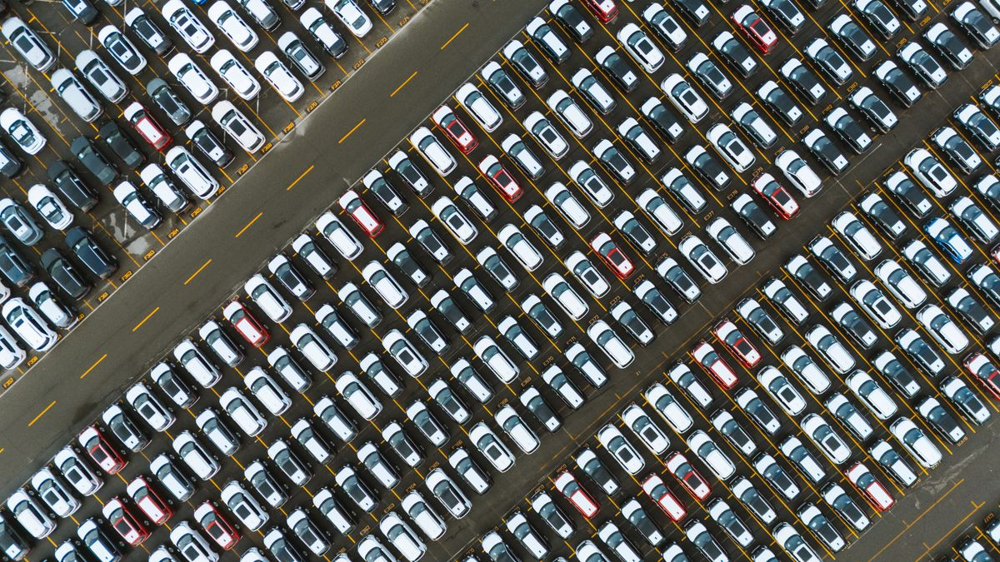

Seja Frotista
Cuidamos de toda a gestão operacional, recrutamento de motoristas e otimização da sua frota. Obtenha o máximo retorno do seu investimento com zero preocupações diárias.

O Problema do Investidor
Investir em viaturas para o mercado TVDE em Portugal é altamente lucrativo, mas gerir a operação exige tempo total. Recrutar motoristas confiáveis, controlar a faturação diária, lidar com manutenções e garantir que os carros não ficam parados são desafios complexos.
A Distância Generosa assume toda essa gestão por si. Colocamos o seu capital a render na estrada através de um modelo de gestão de frotas profissional, transparente e focado na máxima eficiência de cada quilómetro rodado.
Preocupações diárias com a operação
Monitorização da performance das viaturas
Transparência nos relatórios financeiros
Plataformas de mobilidade geridas
O Que Fazemos
Recrutamento e seleção rigorosa de motoristas qualificados e certificados para as suas viaturas.
Gestão operacional diária e escalas de trabalho organizadas para maximizar a utilização de cada viatura.
Monitorização contínua de performance e faturação de cada viatura com relatórios detalhados.
Controlo de manutenções e otimização de custos para garantir que as viaturas estão sempre em condições.
Relatórios financeiros claros e repasses transparentes. Acompanhe os resultados quando e onde quiser.
O nosso modelo é focado em maximizar cada euro investido nas suas viaturas, dia após dia.
Modelo de Parceria
Analisamos os seus veículos para garantir que cumprem todos os requisitos de idade, características e documentação exigidos pelas plataformas Uber e Bolt.
Vinculamos as viaturas à nossa operação licenciada e preparamos toda a logística necessária para iniciar a operação.
Alocamos motoristas profissionais certificados e iniciamos a operação focada em metas de faturação e rentabilidade.
Você acompanha os resultados e recebe os seus rendimentos de forma regular, com total transparência e clareza.
Vamos conversar
Tem viaturas paradas ou quer entrar no mercado de frotas TVDE com o parceiro certo? Fale com a nossa equipa de gestão e desenhe o plano ideal para o seu perfil.
Falar com o Gestor de Frotas